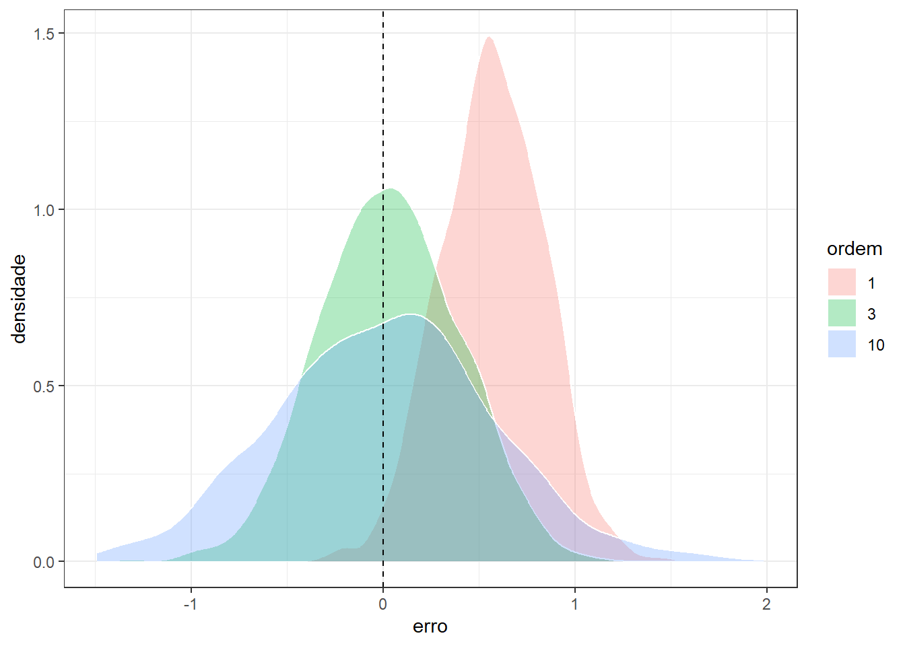

library(ggplot2)
library(dplyr)Conflito entre vício e variância no Aprendizado supervisionado
Aula de laboratório 2 - Conflito entre vício e variância
Carregando as bibliotecas (pacotes) para análise.
Criando uma função para simular o conflito. Na prática tal função é desconhecida; portanto deseja-se aproximá-la apartir dos dados.
f_sin <- function(x) {
f <- sin(2*pi*x)
return(f)
}Simulando dados. x foi simulado segundo uma distribuição uniforme com limites entre 0 e 1. y foi simulado avaliando os valores de x na função criada previamente adicionando um termo de erro segundo a distribuição normal com média nula e desvio-padrão igual a 0.2.
set.seed(7)
x <- runif(100,0,1)
data <- data.frame(x = x,
y = f_sin(x) + rnorm(100, 0, .2))
knitr::kable(head(data))| x | y |
|---|---|
| 0.9889093 | -0.1221770 |
| 0.3977455 | 0.5976526 |
| 0.1156978 | 0.7380248 |
| 0.0697487 | 0.7657825 |
| 0.2437494 | 1.1439769 |
| 0.7920104 | -0.8691573 |
Plotando.
ggplot(data, aes(x,y)) +
geom_point(col="red") +
theme_bw()
Plotando os dados disponíveis acompanhados de três modelos de regressão polinomial simples, um linear, um cúbico e um de décima ordem.
colors <- c("y" = "red3", "linear" = "grey", "cúbico" = "green2", "poly-10" = "purple")
ggplot(data, aes(x,y)) +
geom_point(aes(color = "y")) +
geom_smooth(method = lm, formula = y ~ x, se = F, aes(color = "linear")) +
geom_smooth(method = lm, formula = y ~ poly(x, degree = 3, raw = TRUE),
se = F, aes(color = "cúbico")) +
geom_smooth(method = lm, formula = y ~ poly(x, degree = 10, raw = TRUE),
se = F, aes(color = "poly-10")) +
labs(color = "Legend") +
scale_color_manual(values = colors) +
theme_bw()Tomando um valor arbitrário de \(x = 075\), e 1000 conjuntos distintos de observações futuras, é possível medir o vício e a variância das estimativas obtidas por cada modelo.
set.seed(7)
pred <- data.frame(model = numeric(3000),
pred = numeric(3000),
vicio = numeric(3000))
x0=0.75
i<-1
E_y <- f_sin(x0)
E_y[1] -1for (k in 1:1000) {
data_ <- data.frame(x = x,
y = f_sin(x) + rnorm(100, 0, 2))
lm1 <- lm(y ~ x, data_)
lm3 <- lm(y ~ poly(x, degree = 3, raw = TRUE), data_)
lm10 <- lm(y ~ poly(x, degree = 10, raw = TRUE), data_)
pred1 <- predict(lm1, newdata = data.frame(x=x0))
pred3 <- predict(lm3, newdata = data.frame(x=x0))
pred10 <- predict(lm10, newdata = data.frame(x=x0))
vicio1 <- pred1 - E_y
vicio3 <- pred3 - E_y
vicio10 <- pred10 - E_y
pred$model[i] <- 1
pred$model[i+1] <- 3
pred$model[i+2] <- 10
pred$pred[i] <- pred1
pred$pred[i+1] <- pred3
pred$pred[i+2] <- pred10
pred$vicio[i] <- vicio1
pred$vicio[i+1] <- vicio3
pred$vicio[i+2] <- vicio10
i <- i + 3
} ggplot(pred, aes(x=as.factor(model),y=vicio, col = as.factor(model))) +
geom_boxplot() +
geom_jitter(alpha = .1) +
geom_hline(yintercept = 0, linetype=2) +
labs(x = "ordem", y = "erro") +
theme_bw() +
theme(legend.position="none")ggplot(pred, aes(x=vicio, fill = as.factor(model))) +
geom_density(alpha = .3, col = "white") +
geom_vline(xintercept = 0, linetype=2) +
labs(y="densidade", x = "erro", fill = "ordem") +
theme_bw()
O modelo linear apresenta maior vício e menor variância, enquanto o modelo de décima ordem apresenta menor vício, porém maior variância. Deve-se buscar um modelo que apresente equilíbrio entre ambas medidas.
A seguir também são tabelados valores de vício e variância dos modelos segundo a ordem ou complexidade entre os mesmos. O modelo de menor grau e, portanto menor complexidade, apresenta alto vício, porém baixa variância. Já o modelo de maior grau, ou maior complexidade, apresenta baixo vício, porém alta variância.
knitr::kable(pred |>
group_by(ordem = model) |>
summarise(vicio2 = format(mean(vicio)^2, scientific=F)))| ordem | vicio2 |
|---|---|
| 1 | 0.3227649 |
| 3 | 0.001054674 |
| 10 | 0.00007984984 |
knitr::kable(pred |>
group_by(ordem = model) |>
summarise(var = format(var(pred), scientific = F)))| ordem | var |
|---|---|
| 1 | 0.0709204 |
| 3 | 0.1295606 |
| 10 | 0.3172023 |
Simulando o conflito para um caso com poucas observações disponíveis. O modelo linear apresenta um baixo ajuste, enquanto o de décima ordem apresenta um sobreajuste, uma vez que praticamente interpola os dados disponíveis. A capacidade de previsão deste não se confirmará para dados futuros.
set.seed(7)
xa <- runif(15,0,1)
dataa <- data.frame(x = xa,
y = f_sin(xa) + rnorm(15, 0, .2))
colors <- c("y" = "red3", "linear" = "grey", "cúbico" = "green2", "poly-10" = "purple")
ggplot(dataa, aes(x,y)) +
geom_point(aes(color = "y")) +
geom_smooth(method = lm, formula = y ~ x, se = F, aes(color = "linear")) +
geom_smooth(method = lm, formula = y ~ poly(x, degree = 3, raw = TRUE),
se = F, aes(color = "cúbico")) +
geom_smooth(method = lm, formula = y ~ poly(x, degree = 10, raw = TRUE),
se = F, aes(color = "poly-10")) +
labs(color = "Legend") +
scale_color_manual(values = colors) +
theme_bw()A seguir apresenta-se o erro ou valor da função perda de tais modelos para dados de treino e dados futuros.
set.seed(7)
xa <- runif(20,0,1)
dataa <- data.frame(x = xa,
y = f_sin(xa) + rnorm(20, 0, .2))
lm1a <- lm(y ~ x, dataa)
lm2a <- lm(y ~ poly(x, degree = 2, raw = TRUE), dataa)
lm3a <- lm(y ~ poly(x, degree = 3, raw = TRUE), dataa)
lm5a <- lm(y ~ poly(x, degree = 5, raw = TRUE), dataa)
lm10a <- lm(y ~ poly(x, degree = 10, raw = TRUE), dataa)
set.seed(27)
xb <- runif(20,0,1)
datab <- data.frame(x = xb,
y = f_sin(xb) + rnorm(20, 0, .2))
MSE <- function(obs, pred) {
MSE <- mean((obs - pred)^2)
return(MSE)
}
MSE1_T <- MSE(dataa$y, lm1a$fitted.values)
MSE2_T <- MSE(dataa$y, lm2a$fitted.values)
MSE3_T <- MSE(dataa$y, lm3a$fitted.values)
MSE5_T <- MSE(dataa$y, lm5a$fitted.values)
MSE10_T <- MSE(dataa$y, lm10a$fitted.values)
yhat1 <- predict(lm1a, newdata = datab)
yhat2 <- predict(lm2a, newdata = datab)
yhat3 <- predict(lm3a, newdata = datab)
yhat5 <- predict(lm5a, newdata = datab)
yhat10 <- predict(lm10a, newdata = datab)
MSE1_t <- MSE(datab$y, yhat1)
MSE2_t <- MSE(datab$y, yhat2)
MSE3_t <- MSE(datab$y, yhat3)
MSE5_t <- MSE(datab$y, yhat5)
MSE10_t <- MSE(datab$y, yhat10)
data_MSE <- data.frame(model = rep(c(1,2,3,5,10),2),
dados = c(rep("treino",5),rep("teste",5)),
MSE = c(MSE1_T, MSE2_T, MSE3_T, MSE5_T, MSE10_T,
MSE1_t, MSE2_t, MSE3_t, MSE5_t, MSE10_t))
ggplot(data_MSE, aes(x=model, y = MSE,
col = dados,
linetype = dados,
pch = dados)) +
geom_point(size=2) +
geom_line() +
labs(x = "ordem") +
scale_x_continuous(breaks = 1:10) +
theme_bw()
Pode-se observar que para os dados de treino, à medida que se aumenta a complexidade do modelo ajustado o erro diminui. O mesmo não acontece para os dados futuros ou de teste do modelo.
Quando um modelo apresenta alto erro tanto para os dados de treino quanto para os dados de teste, ele é considerado um modelo com baixo ajuste. Quando um modelo apresenta baixo erro para os dados de treino, mas alto erro para os dados de teste, ele é considerado um modelo com sobreajuste.